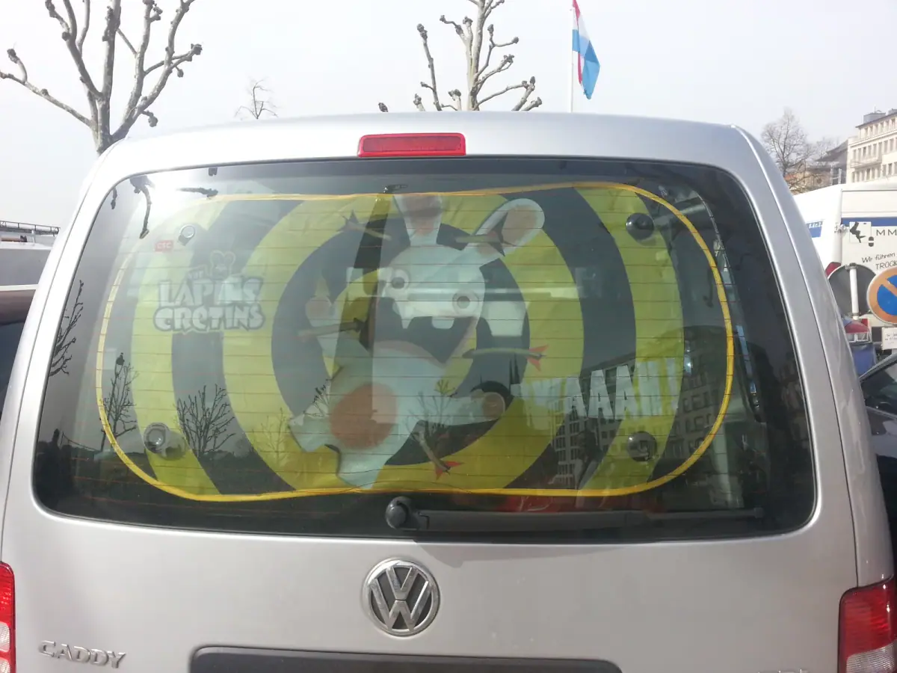
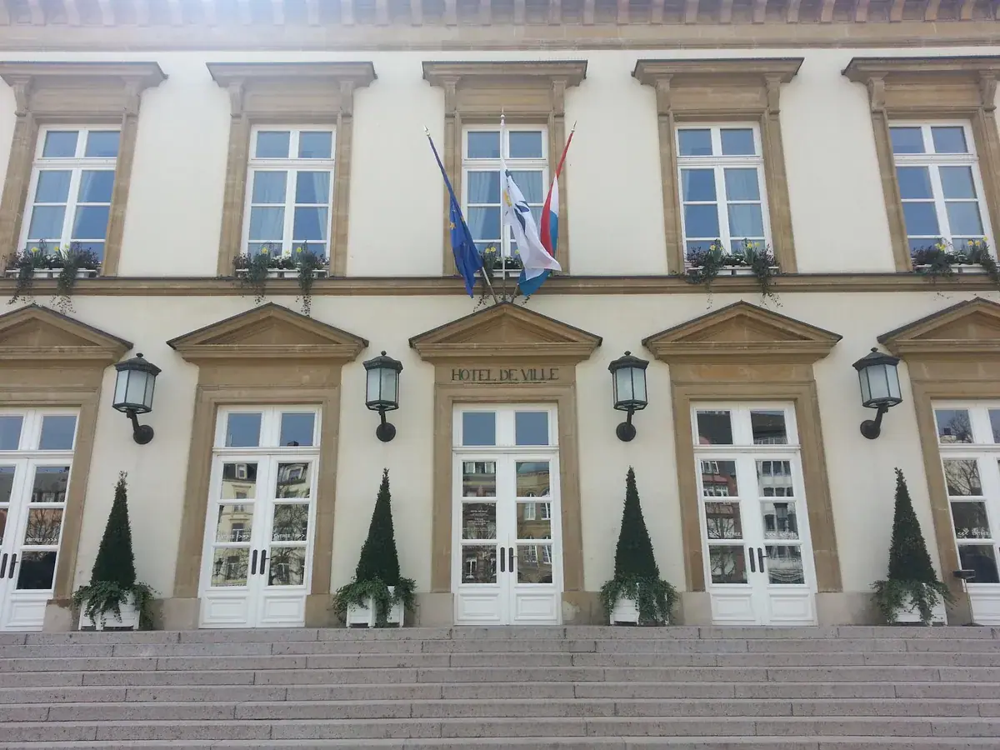
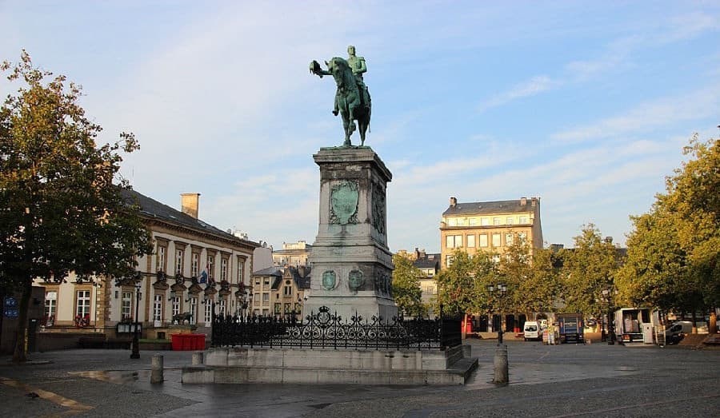

卢森堡：这个小国不大，却让欧洲金融绕不开它
Luxembourg — How a Small Country Built a Big Role in European Finance

有些城市，走过之后会记住一条街、一座建筑，或者某个具体的瞬间。
卢森堡给我的印象却不太一样。
2015 年欧洲考察途中来到这里，城市不大，走走逛逛，很快就能对它形成直观印象。但真正值得记下来的，并不是它有多大、有什么景点，而是一个反差：一个国土面积不大的国家，为什么能在欧洲的司法体系与国际金融网络中占据重要位置？
如果只看地图，卢森堡很容易被忽略。但如果把视线从地图移到机构、资金与企业的布局上，这个小国的分量就完全不同了。
欧盟的重要一站：小国里的欧洲机构
卢森堡国土面积约 2,586 平方公里，是欧洲面积较小的国家之一。但在欧洲一体化的制度安排中，它拥有远超国土面积所能带来的存在感。
卢森堡市是多个欧盟机构的重要所在地，包括欧洲法院、欧洲审计院，以及欧洲投资银行和欧洲投资基金等机构。它也因此成为理解欧洲制度运作时不能忽略的一站。
这里值得注意的，不是把卢森堡简单称为"欧盟第三首都"，而是看它如何通过长期的制度安排，在欧洲机构网络中形成稳定的位置。
国家的影响力，并不总是由人口和面积直接决定。有时，机构落在哪里、承担什么职能，以及能否持续参与跨国事务，同样会影响一座城市在区域体系中的分量。
对企业来说，这种位置也不只是政治地理上的概念。欧洲的法律环境、监管体系和机构网络，都会影响企业如何安排业务、管理风险，以及选择在哪里建立区域布局。


金融：小国形成的另一种竞争力
卢森堡更为人熟知的角色，是国际金融中心。
它的金融业并非只服务本国市场，而是与跨境银行业务、基金管理、投资结构和欧洲市场紧密相连。对于需要在多个国家开展业务的金融机构而言，卢森堡长期以来都是值得研究的落点。
原文记录中提到，这里聚集了大量外国银行，也吸引了多家国际企业设置欧洲业务机构。具体企业的总部安排与业务职能会随时间变化，但这组现象所反映的问题仍然值得关注：
为什么企业会选择一个并不大的国家，来承载面向更大市场的业务？
答案不能简单归结为税率。税务安排可能是企业评估的一部分，但金融基础设施、监管环境、专业服务、人才与跨境业务条件，也都是企业进行选址判断时需要综合考虑的因素。
换句话说，卢森堡的竞争力不只在于它提供了什么优惠，更在于它围绕国际金融业务逐渐形成了怎样的服务与制度环境。
对一个小国而言，找到自己能够长期服务的国际市场，可能比单纯扩大本土规模更重要。
对中国企业来说，卢森堡还有一层现实意义
对于中国企业而言，卢森堡并不只是欧洲地图上的一个小国。
原始考察记录特别关注了中资银行在这里的布局，并列举了中国银行、中国工商银行、中国建设银行、中国农业银行、招商银行、交通银行和中国光大银行等机构。
这些布局所指向的，是一个比"选择欧洲总部所在地"更具体的问题：当企业与金融机构进入欧洲市场时，如何安排跨境资金、银行服务、合规管理和区域业务协调？
不同银行的机构设置与职能并不完全相同，具体布局也可能随时间调整。但从企业出海的角度看，金融枢纽的重要性很容易理解：企业进入一个新市场，除了客户和销售渠道，还需要能够支持日常经营的金融服务与专业网络。
这也是为什么考察一个国家时，不能只看它的本地消费市场有多大。对于某些业务来说，一个地方的价值，可能来自它连接了哪些市场、聚集了哪些专业服务，以及能否帮助企业更有效地组织跨境经营。
一个国家的分量，从来不是用面积算出来的，是看它在别人的资产负债表里，占了多重的位置。
——董立鑫 海鑫汇创始人兼执行总裁，新加坡世贸秘书长兼首席运营官
这一站留下的判断
回看卢森堡，这一站在旅程中的记忆或许并不浓烈，但它提出的问题很清楚。
有些国家依靠人口规模、资源禀赋或庞大的内需市场形成优势；另一些地方，则通过机构布局、专业服务与跨境连接，在更大的区域网络中找到自己的位置。
卢森堡并不是一个可以简单复制的商业模板。它的地理条件、历史发展、欧洲一体化进程和金融制度，都有自己的背景。但它提醒我们：衡量一个地方的商业价值，不能只看它本身有多大，还要看它在更大网络中承担什么角色。
对准备出海的企业来说，这也是一个实用的问题。
选择一个海外市场时，不要只问"这里有多少客户"，也要问：这里连接着什么资源？能提供哪些专业服务？它能帮助企业更好地进入哪个区域？又有哪些制度、成本和合规要求必须提前理解？
一个地方真正的分量，不只体现在它拥有多少资源，也体现在它能为跨境商业连接创造多少价值。
本文整理自董立鑫（Bruce Dong）海外产业考察记录，首发于海鑫汇。